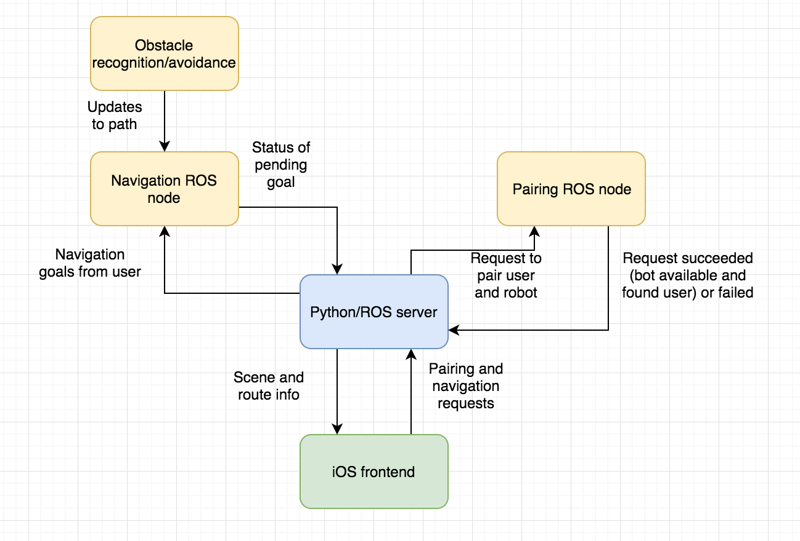

We propose the following project plan:
Goals:
Minimal goals:
- Robot can navigate through hallway without running into things
- Robot can intuitively guide a blind person from a start point to an end point
- iOS app for controlling robot and sending nav goals
Stretch goals:
- Robot can speak info about obstacles, etc. while guiding
- Robot can find and take a blind person's hand, and do other things to improve pairing
- Robot can identify and point to door handle if the door is closed
System Architecture Diagram
Three-Week Plan:
Week 1:
- Connect iOS app to Python server
- Basic interface for iOS app done
- Hallway map and python driver for robot done
- 3D printed handle done
- Start on obstacle and hand recognition
Week 2:
- Connect speakers to robot
- Obstacle recognition done
- Hand recognition / human-robot pairing done
- Start work on speaking scene info
- Start work on door recognition
Week 3:
- Finish things we got behind on from first 2 weeks
- Test